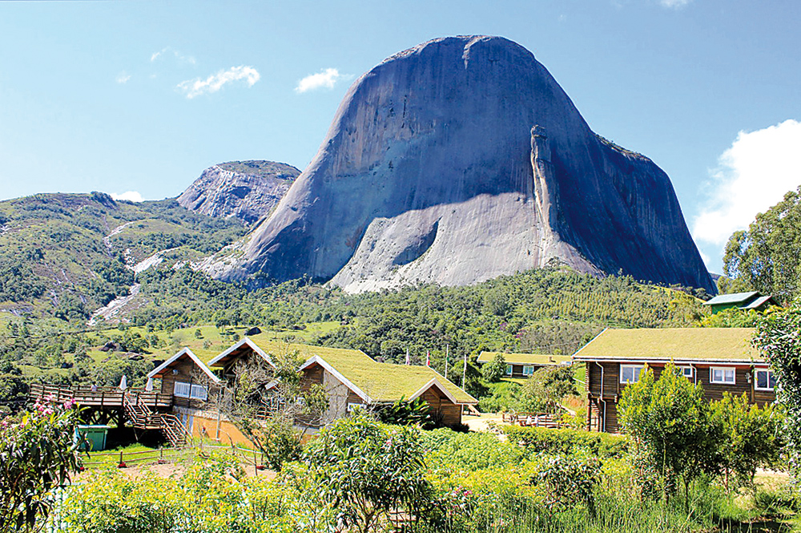
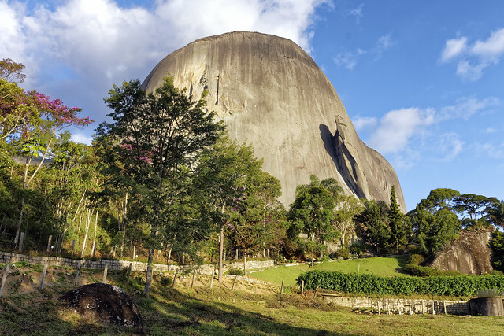
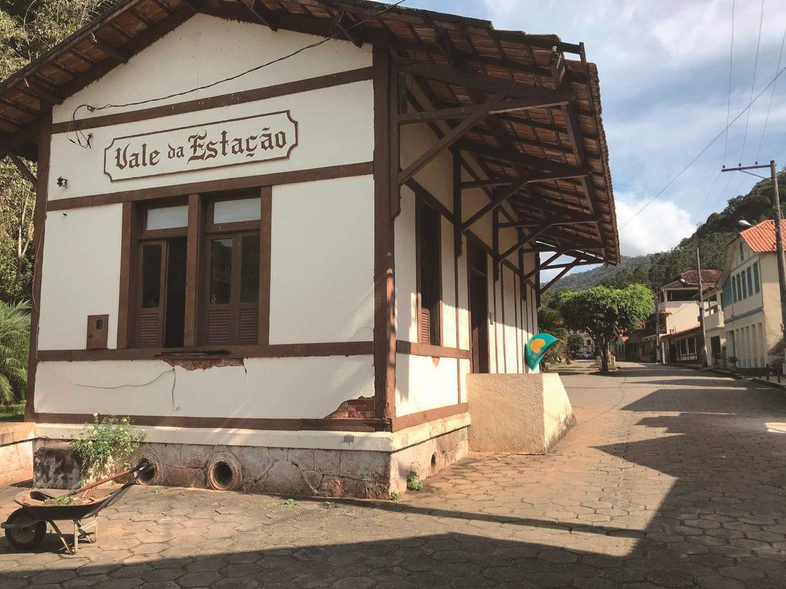

Pedra Azul - Domingos Martins, Espírito Santo
Parque Estadual da Pedra Azul
Pedra Azul - Domingos Martins, Espírito Santo
O Parque Estadual da Pedra Azul possui 1240m², com várias opções de passeio, inclusive a pé. O Parque foi criado em 1991 para proteger o patrimônio natural da região, principalmente a famosa Pedra Azul, uma formação rochosa de granito que com 1822m de altura chama atenção à distancia. Dentre os passeios mais procurados no Parque estão às trilhas que levam às piscinas naturais, a trilha da Pedra do Lagarto, a do Mirante e da Pedra Azul. O Parque é rico em biodiversidade, tendo cerca de 51 espécies de bromélia, 126 de orquídeas, 182 espécies de aves e outros animais, como macacos, preguiças e algumas onças.
A Pedra Azul tem esse nome devido ao fato de que, dependendo a incidência da luz solar, sua cor pode mudar, sendo algumas vezes azul, verde e até amarela.
Horário de Visitação de terça-feira a domingo das 08:00h às 11:00h e 13:00h às 16:00h (50 pessoas por turnos)
OBS: Horário de funcionamento do parque pode mudar de acordo com a classificação de Risco dos Municípios, devido a pandemia.
Área aproximada: 1.240 ha.
Localização: Município de Domingos Martins, distrito de Pedra Azul.
Igreja de Santa Isabel

Igreja Santa Isabel - Domingos Martins, Espírito Santo
Paróquia Católica de Santa Isabel de Domingos Martins. Composta de 10 comunidades:
- Nossa Senhora da Penha – Vale da Estação
- Santo Arnaldo – Boqueirão
- Sagrado Coração de Jesus – Biriricas
- Santa Isabel – Matriz
- São Geraldo – Domingos Martins
- Sagrada Família – Vila Verde
- Santa Barbara e Santa Cecília – Galo
- São Miguel – São Miguel
- Santo Agostinho – Melgaço
- Santa Úrsula – Soído
Estação de Trem Vale da Estação
Estação de Trem Vale da Estação - Domingos Martins, Espírito Santo
A região serrana do Espírito Santo é rica na história da imigração. Com locais repletos de memórias e valor cultural, fazer um passeio por estas serras é uma viagem no tempo. Perto de Vila Velha e Vitória, fica a região conhecida por sua tríplice herança europeia, Viana e suas raízes portuguesas, Domingos Martins e a influência alemã e Marechal Floriano com forte presença italiana.
O que interligava esses municípios próximos, além das paisagens montanhosas, era a ferrovia que até pouco tempo funcionava como roteiro turístico. Dentro da rota estava a antiga Estação Ferroviária Germânia, no distrito pertencente a Domingos Martins denominado de Santa Izabel.
A ferrovia que foi aberta no início do século XX, estabeleceu uma estação nos vales de Domingos Martins, denominado a mesma de Santa Izabel (o primeiro nome do município em uma homenagem a política migratória imperial). Com o passar do tempo, a estação seria rebatizada de Germânia, em homenagem aos imigrantes que prevaleceram no município e depois Domingos Martins.
O apelo turístico fez a ferrovia ultimamente ser conhecida como Vale da Estação, onde existem materiais que contam um pouco da trajetória da região. Um local histórico, a Antiga Estação Ferroviária Santa Izabel, contra através das suas mudanças de nome, trajetórias da história do Brasil e estado Capixaba.